Hexo和GitHub Pages的静态博客搭建记录
前言
本文的目的是使用Hexo搭建一个免费的静态博客，静态博客的其中一个好处就是速度快。本文基于Hexo及GitHub Pages，在Windows环境下进行操作。
环境需求
安装
先安装Node.js，去官网下载对应自己系统版本，我这里下载的是node-v4.2.4-x64.msi，这是Windows64位的安装包，别问我为什么不用最新版而用LTS(Long Time Support)长期支持版的，我有强迫症看奇数不爽。。。
傻瓜式安装之一路下一步。
安装完Node.js去下载Git，我这里下载的是Git-2.6.4-64-bit.exe，再做一次傻瓜式安装。
两个环境都安装好以后我们分别使用命令查看版本，以此确定是否安装成功：
$ node -v
$ git --version
显示如下，说明都安装成功了。
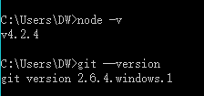
然后进入命令行安装Hexo，就一句话：
$ npm install -g hexo-cli
等待安装完成…OK，安装完是这样的：
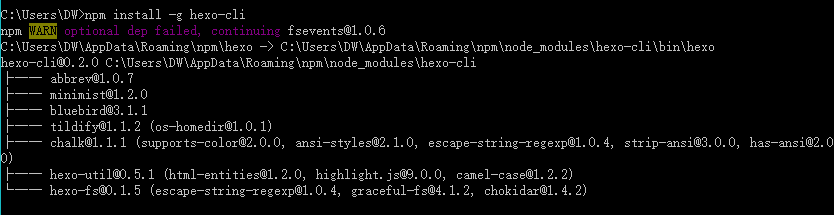
使用hexo -v命令查看版本，显示类似如下的一堆信息说明安装成功
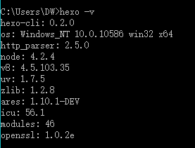
初始化
Hexo安装好以后我们要对其进行初始化，指定文件夹让他建立需要的文件。
进入D盘：
$ cd /d D:
执行Hexo的初始化操作命令：
$ hexo init myhexo
其中myhexo是我指定的文件夹，你可以任意取自己喜欢的名字。可能会出现如下信息：
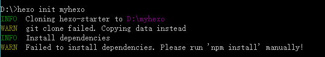
提示信息而已，意思应该都能看懂，我就不翻译了。继续下一步。
进入该文件夹：
$ cd /d myhexo
执行：（这一句其实上图有解释）
$ npm install
等待一会…
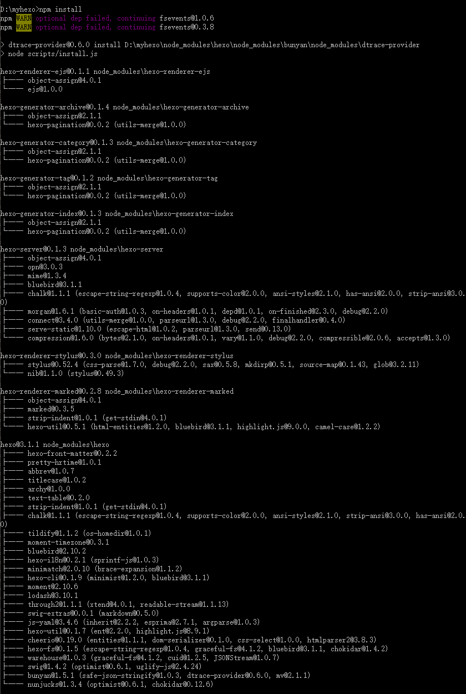
吓死了，一下出来这么多，东西有点多，Linux安装的时候貌似没有这么长一串…
进去目录基本是这样的：
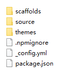
基本的配置可以参考官网的描述，
安装了半天，可以看看效果了，启动Hexo：
$ hexo s
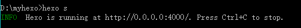
现在我们本地已经启动了，访问http://localhost:4000就可以看到Hexo的界面了！
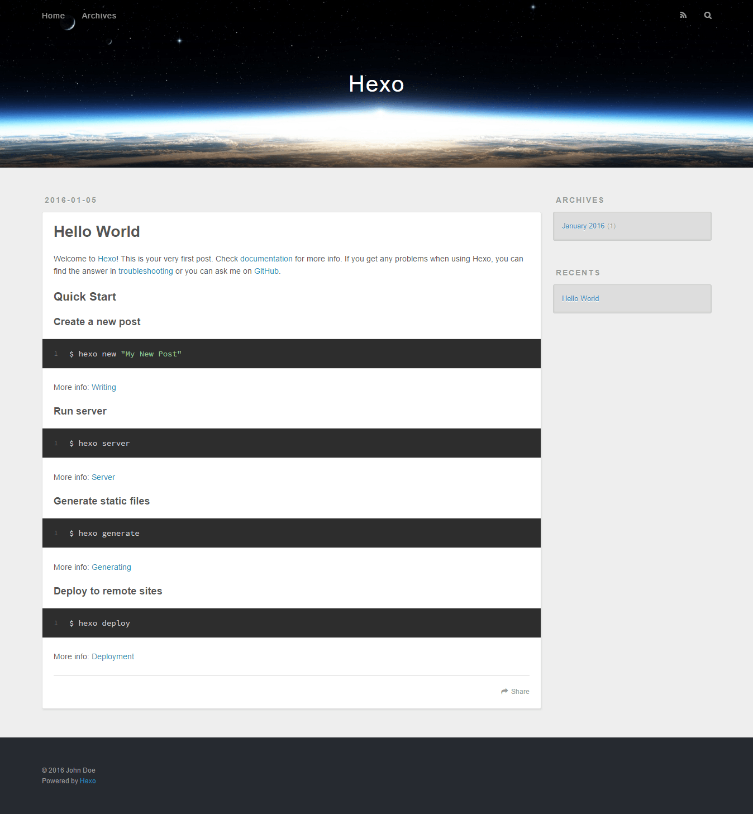
配置GitHub Pages
我们刚刚已经可以成功在本地访问Hexo搭建的博客了，接下来我们要通过一系列的配置让别人也能访问到你的博客。
1. 注册GitHub账号
去GitHub官网注册一个账号，已经有账号的可以跳过这一步。
2. 新建一个仓库
新建一个仓库来存放你的博客。回到个人主页，点击右下角创建一个新仓库
，在此处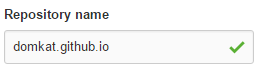填入username.github.io作为你的仓库名。
3. 配置Git
在D盘下新建一个目录mygit，用来存放Hexo部署到Git仓库生成的文件。
看到我们本地还启动着Hexo服务，Ctrl+C先关了
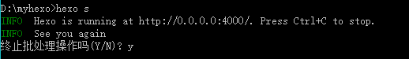
进入mygit文件夹，在空白处右键，选择Git Bash Here
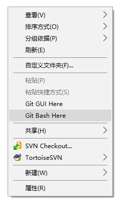
进行Git仓库的初始化：
$ git init
结果如下就是成功了：
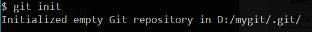
然后配置用户名和邮箱，执行如下命令：
$ git config --global user.name "username"
$ git config --global user.email "email"
然后我们生成SSH keys：
$ ssh-keygen -C "你的邮件地址"
第一次询问你保存的位置，你可以自己输入任意位置，我这里选默认的直接敲回车；第二次是叫你输入密码，不输，回车；第三次确认密码，不输，回车。
OK，去默认路径：C:\Users\你的用户名目录下，找到.ssh的隐藏文件夹，用记事本打开id_rsa.pub，复制其中的全部内容。
接着我们回到GitHub的网页，点击右上角的个人头像，选择Your profile：
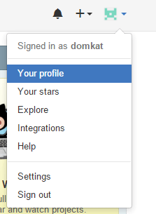
然后点击Edit profile，从左边的列表选择SSH keys：
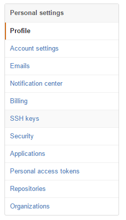
点击Add SSH key，然后把刚刚复制的内容粘贴到Key的那个框中，标题自己写一个好了。然后点击Add进行添加。
添加完SSH key之后我们进行连接，否则后面部署可能会出现不能访问的问题，在Git Bash中执行：
$ ssh -T git@github.com
出现：
Are you sure you want to continue connecting (yes/no)?
输入yes。
再次回到个人主页，点击刚刚创建的username.github.io的仓库，点击上方偏右的Settings，往下拉，找到GitHub Pages部分，如图：
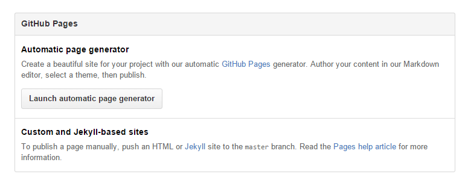
点击Launch automatic page generator，Page name填写你刚刚创建的仓库名：
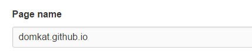
然后下一步，点击Publish page。
过一两分钟就可以通过username.github.io访问到你GitHub Pages托管的站点了，当然目前他还没有和我们使用的Hexo关联起来。
配置Hexo
打开我们的myhexo文件夹，我们要对hexo进行配置，让他能够通过我们刚刚的二级域名进行访问。
编辑_config.yml文件，最下面的deploy改成如下所示：
deploy:
type: git
repo:git@github.com:username/username.github.io.git
其中的username自己改。
部署
要使用Git来部署Hexo，还需要安装Git的一键部署工具：
$ npm install hexo-deployer-git --save
安装完以后来对Hexo进行相应的配置。
回到我们之前取消本地服务的那个命令行，也就是在myhexo目录下，执行如下命令：
$ hexo g
然后继续输入：
$ hexo d
你会看到一堆东西，最后看到Deploy done: git就是部署成功了。
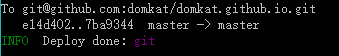
这时候你就可以用username.github.io访问搭建好的博客了。
关于一些Hexo的命令可以参考官网的文档